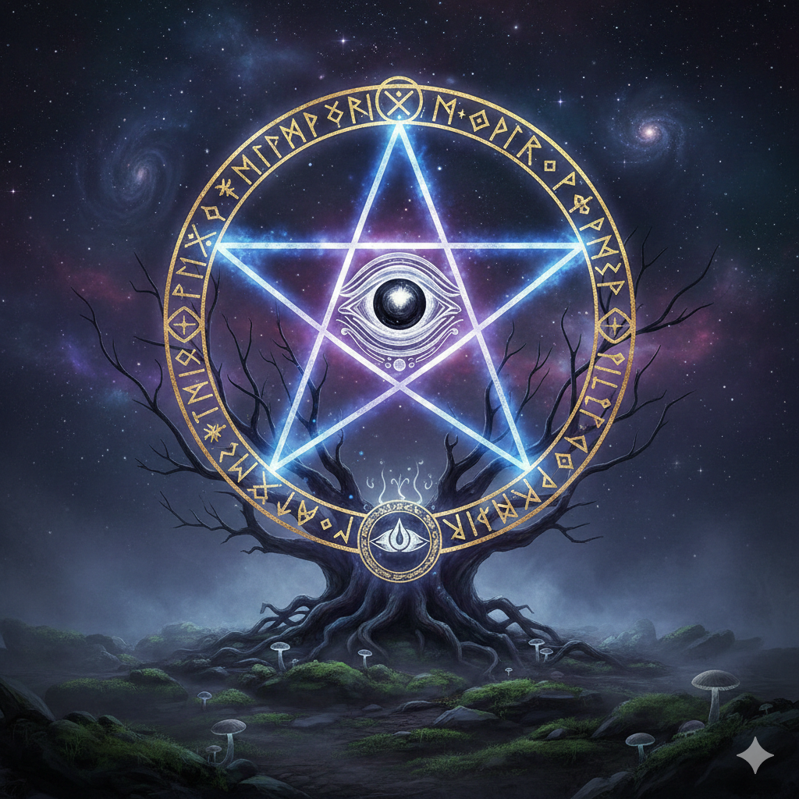

PÉNDULO: Cristal, Madera u Orgonita. Elige el que resuene contigo.
AMBIENTE: Lugar tranquilo y armonioso para trabajar.
APOYO: Mesa o lugar de apoyo para estar cómodo.
REGISTRO: Lápiz negro y papel (para trabajos a distancia).
ARMONIZACIÓN: Música de meditación para abrir el espacio sagrado.
...
Video: Introducción y Materiales
Limpieza y Consagración
La forma más rápida es con Sahumerio. El humo debe envolver al péndulo por completo desde abajo hacia arriba.
Mirar hacia el Este.
Poner el péndulo entre las manos en forma de rezo.
Llevarlo a la nariz, inspirar y exhalar 3 veces.
Llevarlo al entrecejo y luego al corazón.
"A partir de este momento te consagro para que trabajes en la luz, muestres siempre la verdad, estés en ley, tus respuestas vengan siempre del ser superior y sean sabias, claras, precisas y seguras. Gracias".
Video: Técnica de Limpieza
Espacio Sagrado y Protección
Es fundamental proteger el lugar antes de cualquier trabajo. Puedes utilizar el Símbolo de Pentagrama o Tetragrámaton. Trazamos primero el círculo y luego el pentagrama para sellar el ambiente. Visualiza una luz blanca protectora para sellar tu propia aura.

SÍMBOLO DE PROTECCIÓN
Video: Protección Energética
Funcionamiento del Péndulo
El lenguaje del Péndulo:
El péndulo es un puente entre la mente consciente e inconsciente. Traza dibujos que el hemisferio derecho (intuición) comprende y el izquierdo (lógica) procesa.
Sintonización (Descubrir tu SÍ y NO):
Para que responda correctamente, es vital tener una actitud neutral.
1. Haz una pregunta de respuesta obvia ("¿La nieve es blanca?") para ver el movimiento del SÍ.
2. Haz una pregunta falsa para descubrir tu movimiento del NO.
Reglas de Oro: No utilizar si consumiste alcohol, medicamentos que alteren el sistema nervioso, si estás muy cansado o comiste en exceso.
Video: Movimientos y Sintonización
Armonización de Chakras
Interpretación de los Giros:
SENTIDO HORARIO: El chakra está sano, la energía fluye correctamente.
SENTIDO ANTI-HORARIO: Bloqueo, fuga o la energía fluye negativamente para el cuerpo.
SIN MOVIMIENTO: El chakra está cerrado o la energía está estancada.
MOVIMIENTO ERRÁTICO: Existe una fuga o descompensación energética.